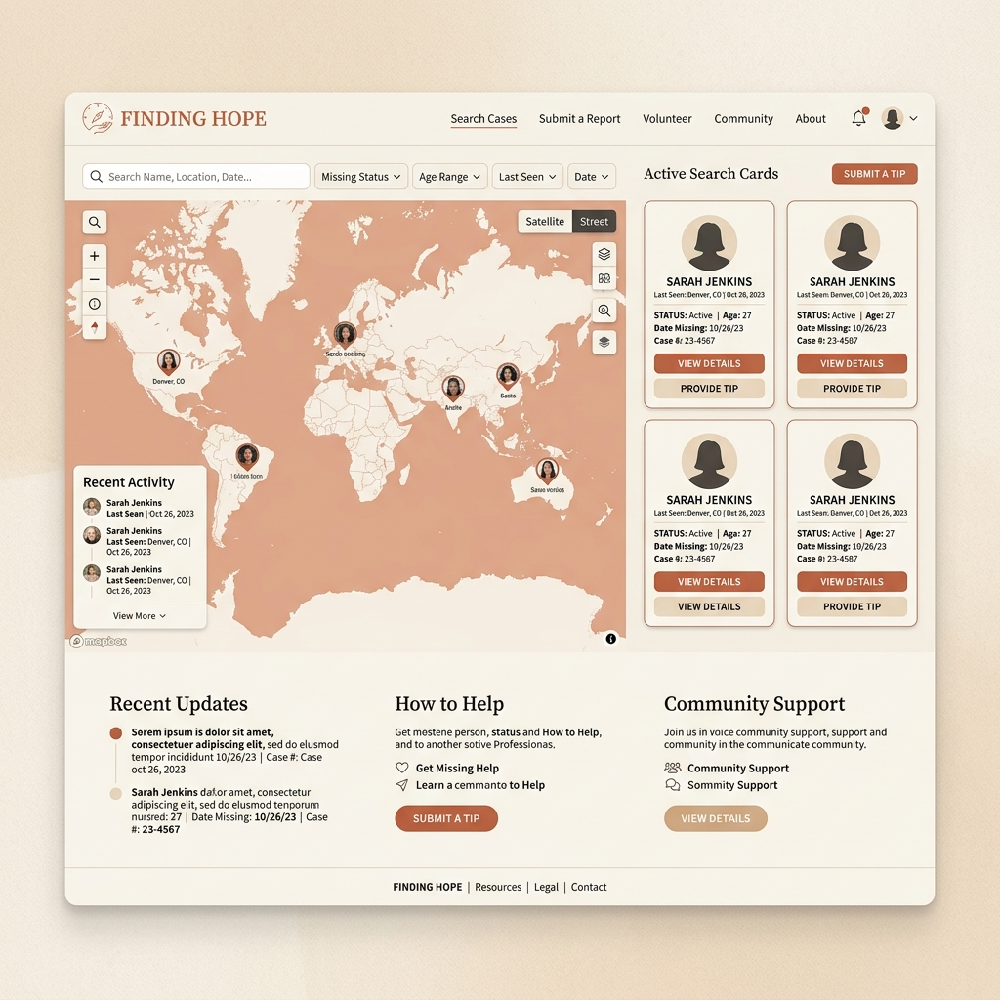

WherAreThey; The Infrastructure Of Finding Each Other

Missing persons cases in Nigeria exist in a state of fragmentation that makes them significantly harder to resolve than they need to be. An Instagram post here. A WhatsApp status there. A Twitter thread that surfaces briefly, generates some engagement, and then disappears into the archive within twenty-four hours. There is no central record. There is no coordination mechanism. There is no way for a person who saw something three days ago in a different city to connect that observation to a family who needs it.
WherAreThey is an attempt to build that infrastructure.
The platform functions as both a database and a coordination tool. It is designed to centralise missing persons reports in a format that is searchable, verifiable, and persistent not dependent on the algorithmic whims of social media platforms that were not built for this purpose. But the more important design challenge was not the database. It was the network of people who use it. The goal was to transform every mobile phone user into a potential witness someone who might have relevant information and, if the right tool existed, could contribute it in a way that was actually useful to a search effort.
Building WherAreThey meant taking seriously a set of problems that go beyond the technical. How do you verify sightings without requiring families to engage in further traumatic interactions? How do you protect the privacy of families who are already in a vulnerable position? How do you ensure that information in the system is actually actionable by law enforcement, by search parties, by the community networks that often do most of the practical work of finding missing people in Nigeria?
The design language reflects these considerations. The interface prioritises information clarity above aesthetic ambition. Every element is there because it serves the person who is using the platform in the worst circumstances of their life. Empathy is not just a design principle here. It is the specification.
WherAreThey is a reminder that the most important technology is sometimes the technology that helps people find each other when they are most lost. That is not a metaphor. It is a literal description of what this platform is trying to do.